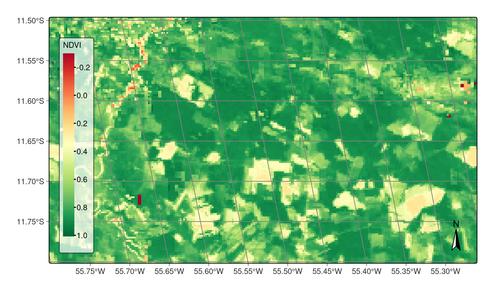
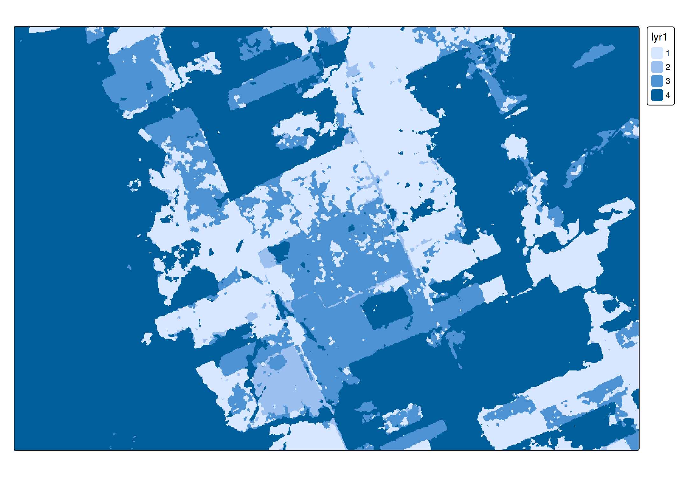

library(tmap)
library(dplyr)
#> Error in get(paste0(generic, ".", class), envir = get_method_env()) :
#> object 'type_sum.accel' not found
library(sf)
library(stars)
library(terra)
library(sits)
tmap_options(scale = 0.75)About the data
ndvi_image = system.file("extdata/raster/mod13q1/TERRA_MODIS_012010_NDVI_2014-01-17.jp2", package = "sits")Reading with the terra package
(ndvi_terra = terra::rast(ndvi_image))
#> class : SpatRaster
#> dimensions : 147, 255, 1 (nrow, ncol, nlyr)
#> resolution : 231.6564, 231.6564 (x, y)
#> extent : -6073798, -6014726, -1312333, -1278280 (xmin, xmax, ymin, ymax)
#> coord. ref. : +proj=sinu +lon_0=0 +x_0=0 +y_0=0 +R=6371007.181 +units=m +no_defs
#> source : TERRA_MODIS_012010_NDVI_2014-01-17.jp2
#> name : TERRA_MODIS_012010_NDVI_2014-01-17Reading with the stars package
(ndvi_stars = stars::read_stars(ndvi_image))
#> stars object with 2 dimensions and 1 attribute
#> attribute(s):
#> Min. 1st Qu. Median Mean 3rd Qu. Max.
#> TERRA_MODIS_012010_NDVI_201... -3056 6937 8174 7601.51 8823 10076
#> dimension(s):
#> from to offset delta refsys x/y
#> x 1 255 -6073798 231.7 unnamed [x]
#> y 1 147 -1278280 -231.7 unnamed [y]Example 1
first plot - a NDVI image in false color with a brewer pallete
ndvi = ndvi_terra # or ndivi_stars
# scale the data to get image in [-1..1] range
ndvi = ndvi * 0.0001
# plot using brewer "RdYlGn" pallete
tmap::tm_shape(ndvi) +
tmap::tm_raster(
col.scale = tmap::tm_scale_continuous(
values = "brewer.rd_yl_gn",
midpoint = NA),
col.legend = tmap::tm_legend(
title = "NDVI",
title.size = 0.7,
text.size = 0.7,
bg.color = "white",
bg.alpha = 0.7,
position = tmap::tm_pos_in("left", "bottom"),
frame = TRUE
)
) +
tmap::tm_graticules(
labels.size = 0.7
) +
tmap::tm_compass() +
tmap::tm_layout(
scale = 1.0
)
Example 2
sent_image = system.file("extdata/raster/classif/SENTINEL2_MSI_20LNR_2020-06-04_2021-08-26_class_v1.tif", package = "sits")
sent = terra::rast(sent_image)
tm_shape(sent) + tm_raster(col.scale = tm_scale_discrete())
#> Warning: [minmax] min and max values not available for all layers. See
#> 'setMinMax' or 'global'